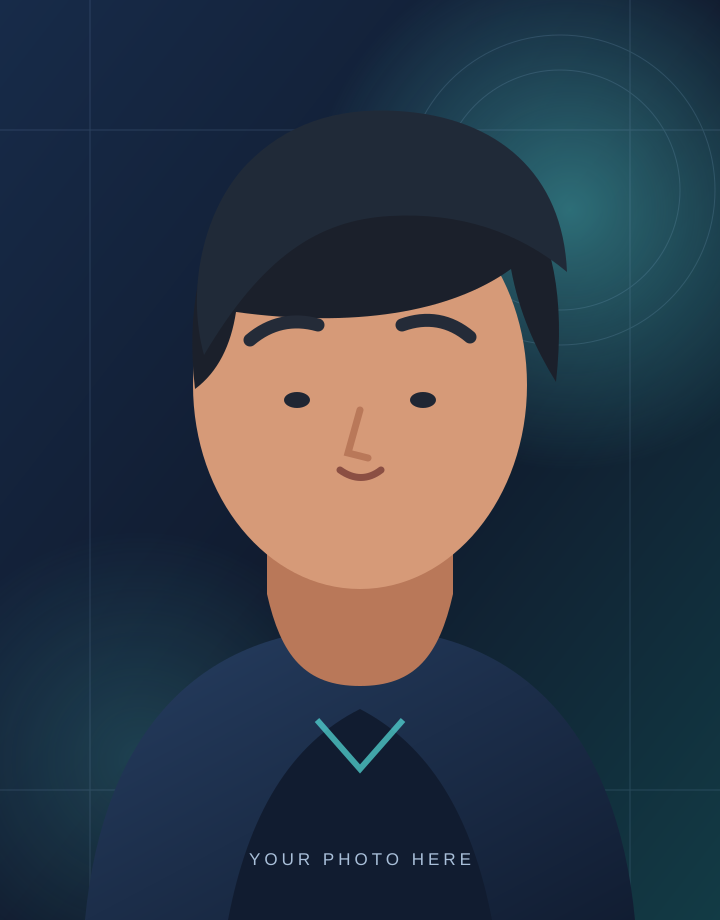

ФОТО АВТОРАВладислав Аксенов
Разработчик · Преподаватель Python
Создаю технологии.
Помогаю детям создавать свои.
Обо мне.
Более 10 лет занимаюсь разработкой программных решений, в том числе в направлении RPA — автоматизации рутинных процессов. Параллельно уже много лет преподаю программирование детям и подросткам.
В работе объединяю инженерный подход и опыт преподавания: помогаю превращать сложные технические идеи в понятные объяснения, интересные эксперименты и проекты, которые хочется создавать самостоятельно.
Мой подход к обучению.
- ↗ Объяснять сложное простыми словами.
- ⌘ Делать упор на практику и реальные проекты.
- ✳ Давать возможность экспериментировать.
- ◎ Помогать самостоятельно находить решения.
Зачем я создал этот курс.
Я хотел сделать понятный, последовательный и интересный курс, который поможет детям не просто выучить синтаксис Python, а по-настоящему понять, как с помощью кода можно создавать полезные и увлекательные вещи.
Есть вопрос или идея?
Буду рад обратной связи, вопросам и предложениям по развитию курса.
➤ Telegram: @quscha ↗